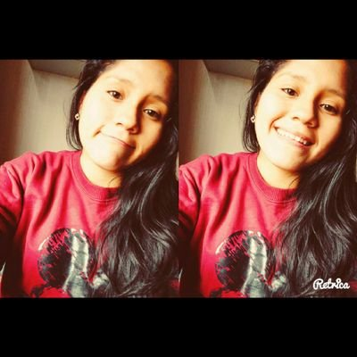

Flor Tello
@flortello
@flortello
TWEETs
9.985
9.985
siguiendo
111
111
seguidores
111
111
Tendencias: Lima
cambiar
#JustinBBMAs
1.59 M Tweets
#TeamValMani
77.4 K Tweets
#FELIZ DÍA DEL TRABAJADOR AYN
4800 Tweeter
#Angie>
29.9 k Tweetes
#Constituyente>
587 k Tweetes
#BTS for TOP SOCIAL ARTIST>
8.85 k Tweetes
 E! Latin America
E! Latin America
@EonlineLatino . 5min
Madonna se preparó para una gran batalla
#AlfombraRojaE! #METgala instagram.com/p/BTkraPNjP5V/